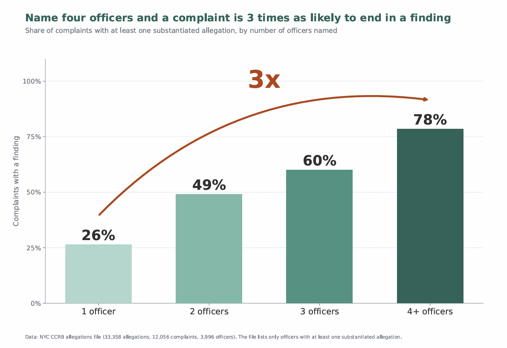
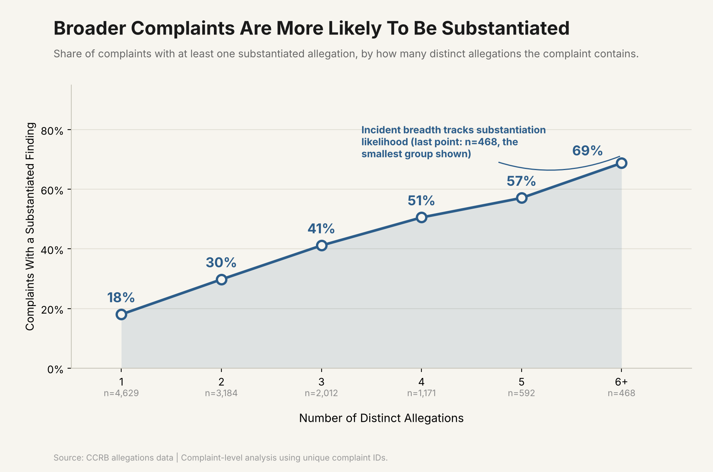

Proposition: Naming more officers in a complaint itself increases the likelihood that at least one allegation will be substantiated.
FOR the Proposition

Design Decisions and Rationale:
- Score (deceptive to earnest, -2 to +2 scale)
- Decision 1: Counting a complaint as a “win” if any allegation was substantiated (Score: -1.5)
We used “at least one allegation substantiated” instead of the overall substantiation rate. This makes the trend look stronger because complaints with more officers also have more allegations (9 on average for 4+ officers vs. 2 for one), so they get more chances to “win.” We picked this metric because it felt like the more natural way to ask whether a complaint succeeded. - Decision 2: Grouping 4–8 officers into one “4+” bar (Score: 0)
The “4+ officers” bar isn’t really one category, it’s everything from 4 up to 8 officers combined into one. It’s also the smallest group (just 93 complaints), but we graphed it exactly like the other bars, so nothing hints that it’s less reliable. We combined them because showing 4, 5, and 6+ separately made the chart look too messy and uncertain. - Decision 3: Adding a “3x” arrow over the bars (Score: +1)
The 3x is accurate (78% ÷ 26%), but the big red arrow is only there to make the jump feel more dramatic. The bars could potentially speak for themselves, but it gives readers an easy number to remember. - Decision 4: Using a light-to-dark green color scale (Score: +2)
Making the bars get darker as officer count increases makes the climb feel more continuous and intentional than four same colored bars would. It’s a small thoughtful change since it doesn’t change any of the actual numbers.
AGAINST the Proposition

Design Decisions and Rationale:
- Score (deceptive to earnest, -2 to +2 scale)
- Decision 1: Using “number of allegations” instead of “number of officers” on the x-axis (Score: +1)
We switched the x-axis to allegation count and showed that it produces almost the same climbing trend (18% → 69%) that the supporting side climb had. We’re not hiding anything, so we believe it’s an honest choice, but it still does a good job at being persuasive. It doesn’t actually prove the officer-count argument is irrelevant, but it just gives the reader an easier explanation to latch onto instead. - Decision 2: Framing the trend as “incident size tracks substantiation likelihood” (Score: -1)
We worded our annotation to say the incident’s size “tracks” substantiation, which sounds like one is causing the other. In reality, all we showed is that the two move together, not that bigger complaints actually cause higher substantiation. The word “tracks” does a lot of work here since it pushes the reader toward a causality without us ever having to claim it outright. - Decision 3: Bucketing 6+ allegations into one group (Score: -1)
We did the same thing Side A did with “4+ officers” and lumped every complaint with 6 or more allegations into a single point. It keeps the line from getting messy at the end, but it hides that this last group isn’t really one number, it’s everything from 6 allegations and up. - Decision 4: Shading the area under the line (Score: +1)
We filled in the space under the line instead of just leaving it as a plain line. It doesn’t change any of the actual numbers, but it makes the upward trend feel heavier and more convincing than it would otherwise.
Final Reflection
Building the visualizations was the straightforward part; the difficult part was determining which proposition we lean towards based on the visualizations and their design choices, since we need to identify the deceptive techniques used in the visualizations in order to draw the accurate conclusion. At the end, we lean toward the opposite side, because although it seems like there is a causal relationship between the number of officers named and that of substantiation, there are two other factors involved: First, complaints naming more officers are also bigger, with 4.4 allegations on average vs. 2.0 for that of one officer. Second, bigger allegations are substantiated more often, with 69% for over six allegations vs. 18% for one. Since the number of named officers and magnitude of the case are proportional, the gap is influenced by both.
We define ethical analysis and visualization to be actively ensuring the impression the viewers have on the visualizations matches what the data support, and being transparent about the design choices that could change the understanding completely. That includes stating what was counted, how they are grouped, and what comparisons were left out. Although there is only a thin line between acceptable and misleading persuasive choices, we think there are two aspects to consider: Does the visualization match the actual impact? And are viewers able to identify the choices that affect the conclusion the most? It becomes misleading when a design hides something that the viewers should know, such as underrepresented groups, a metric that favors a specific side, or any comparison that might weaken the claim the visualization is trying to make.
What surprised us was how persuasive both the supporting and opposing graphs come out to be just by simple tricks like bucketing the last group together (a 4+ bucket for the supporting side, and a 6+ bucket for the opposing side), picking metrics that favors bigger complaints, and also wording annotations to sound causal (saying breadth “tracks” substantiation) which pushes reader to a causal conclusion. We didn’t fake any numbers, instead we just made framing decisions while cleaning up the charts. It made us realize that people could look at the exact same dataset and walk away genuinely convinced of opposite conclusions just by the framing decisions they chose to take.